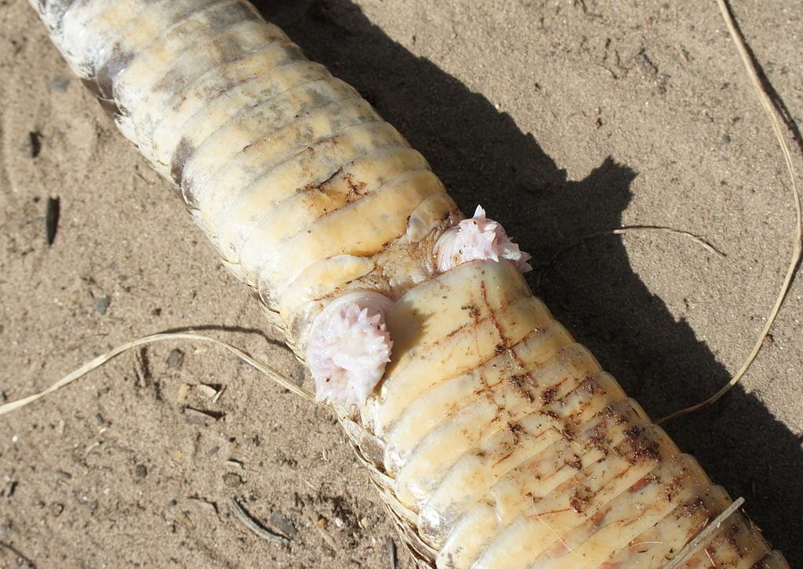
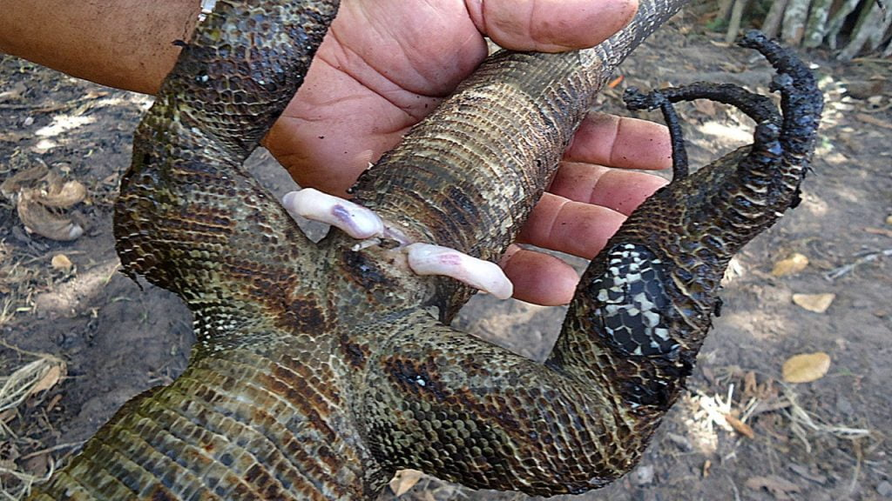
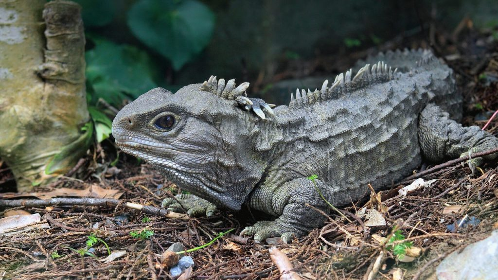
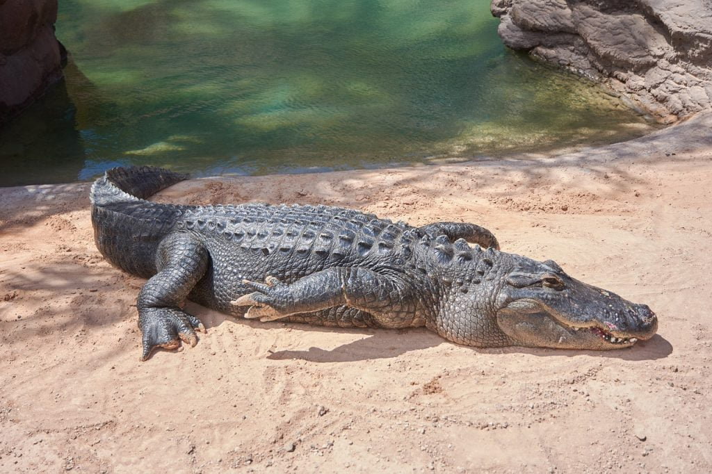

အခုထက်ထိတော့ သိပ္ပံပညာရှင် တွေဟာ တွားသွားသတ္တဝါ အထီးတွေရဲ့ လိင်အင်္ဂါကိုသာ အသေးစိတ် လေ့လာရပါသေးတယ်။ ဘာလို့လဲ ဆိုတော့ တွားသွား သတ္တဝါ အမတွေရဲ့ လိင်အင်္ဂါက ကိုယ်ခန္ဓာအတွင်းထဲ ရောက်နေတော့ လေ့လာရတာ ခက်လို့ပါတဲ့။
နှစ်ခုက တစ်ခုထက် ပိုကောင်းတယ်

မြွေထီးတွေမှ လိင်အင်္ဂါ နှစ်ခုပါတာ မဟုတ်ပါဘူး။ မြွေမတွေနဲ့ ဖွတ်အမတွေမှာလဲ လိင်အင်္ဂါ နှစ်ခုပါပါတယ်တဲ့။ သူတို့ရဲ့ လိင်အင်္ဂါကိုတော့ hemiclitores လို့ခေါ်ပါတယ်။ ဒီ hemiclitores နဲ့ပါတ်သက်လို့ကတော့ သိပ္ပံပညာရှင်တွေ ကောင်းကောင်း မသိကြ သေးပါဘူး။

လုံးဝမပါလာတော့လဲ တစ်မျိုးကောင်းတာပါပဲ
မြွေတွေ၊ ဖွတ်တွေ၊ ပုတ်သင်တွေမှာ လိင်အင်္ဂါ နှစ်ခုပါပေမယ့် နယူးဇီလန်မှာတွေ့ရတဲ့ Tuatara လို့ခေါ်တဲ့ ပုတ်သင်နဲ့ ခပ်ဆင်ဆင်တူတဲ့ အကောင်တွေကတော့ လိင်အင်္ဂါ ပါမလာကြပါဘူး။ ဒီ့အစား ဒီ တူအာတာရာတွေဟာ မိတ်လိုက်တဲ့ အခါမှာ အထီးက အမပေါကို တွယ်တက်ပြီး သူတို့ရဲ့ ဘုံယောနိအဝနဲ့ အမရဲ့ ယောနိအဝနဲ့ကို တေ့ပေးလိုက်ပါတယ်တဲ့။ ဘုံယောနိ (cloaca) ဆိုတာကတော့ ဒီအကောင်တွေမှာ ယောနိရယ်လို့ သပ်သပ်မပါပဲ စအိုရယ်၊ ဆီးလမ်းကြောင်းရယ်၊ ယောနိရယ် အားလုံးပေါင်းနေတဲ့ အပေါက်တစ်ပေါက်ထဲ ပါပါတယ်။ ဒီနည်းနဲ့ တူအာတာရာ အထီးဟာ သူ့မျိုးစေ့ကို အမဆီလွှဲပေးတာပါ။
အမမှာလဲ လိင်တံပါနိုင်ပါတယ်
ဩစတြေးလျ နိုင်ငံက သိပ္ပံပညာရှင်တွေဟာ မနှစ်က ပါးသိုင်းမွှေးရှည် ပုတ်သင်တစ်မျိုးကို လေ့လာရင်း မထင်မှတ်တာတစ်ခုကို တွေ့ခဲ့ကြပါတယ်။ အဲဒါကတော့ ဒီပုတ်သင်မျိုးရဲ့ အမတွေဟာ ဥထဲမှာနေတုန်း အထီးတွေလို လိင်အင်္ဂါ ထွက်လာတာပါ။ အထီးတွေလိုပဲ နှစ်ခုထွက်လာတာပါတဲ့။ ဒါပေမယ့် ဥကပေါက်ခါနီးမှာတော့ အမတွေရဲ့ လိင်တံဟာ ပျောက်ဆုံးသွားပါတယ်။အချွန်အတက်ကလေးတွေနဲ့ လိင်အင်္ဂါ
မြွေတွေရဲ့ လိင်အင်္ဂါမှာ အချွန်အတက် သေးသေးလေးတွေ ပါပါတယ်။ ဘာ့ကြောင့် ဒီလို ဖြစ်နေရတာလဲ ဆိုတာ သိပ္ပံပညာရှင်တွေ သေသေချာချာတော့ မသိသေးပါဘူး။ သီအိုရီ တစ်ခုကတော့ မြွေတွေဟာ မျိုးတူချင်း မိတ်လိုက်ဖို့ အလွန်အရေးကြီးပါတယ်တဲ့။ မျိုးတူတဲ့ မြွေတွေမှာ အထီးနဲ့ အမရဲ့ လိင်အင်္ဂါပုံစံဟာ အံဝင်ခွင်ကျ ရှိပါတယ်တဲ့။ ဒီအချွန်အတက်တွေက မျိုးမတူတဲ့မြွေတွေ မှားယွင်းမိတ်လိုက်မိတာမျိုး မဖြစ်အောင် ကာကွယ်ပေးပါတယ်တဲ့။အချို့ကလဲ ဒီအချွတ်အတက်တွေ၊ ချိတ်တွေ ပါတဲ့အတွက် မိတ်လိုက်ချိန် ပိုကြာမြင့်ပြီး မျိုးစေ့တွေကို ပိုများများ အမဆီ လွှဲပြောင်းပေးနိုင်တယ်လို့ ယုံကြည်ကြပါတယ်။ သေသေချာချာ သိဖို့ဆိုတာကတော့ မြွေမတွေရဲ့ အင်္ဂါကို သေခြာလေ့လာပြီးမှပဲ ပြောနိုင်မယ်လို့ ပညာရှင်တွေက ထောက်ပြပါတယ်။
Alligator မိကျောင်းထီးတွေရဲ့ လိင်အင်္ဂါဟာ အမြဲထောင်မတ်နေတယ်

ဒီလိုအင်္ဂါမျိုးကို အမေရိကန် မိကျောင်းတွေတင်မက အီဂျစ်က နိုင်းမြစ်မိချောင်းတွေနဲ့ ဩစတြေးလျတိုက်က ရငန်မိကျောင်းတွေမှာလဲ တွေ့ရပါတယ်။ ဘာလို့ ဒီလို ခုန်ထွက်နိုင်တဲ့ လိင်အင်္ဂါရှိနေတာလဲ ဆိုတာကတော့ သိပ္ပံပညာရှင်တွေ စဉ်းစားမရ ဖြစ်နေဆဲပါတဲ့။
Source: National Geographic | Why Snakes Have Two Penises and Alligators Are Always Erect